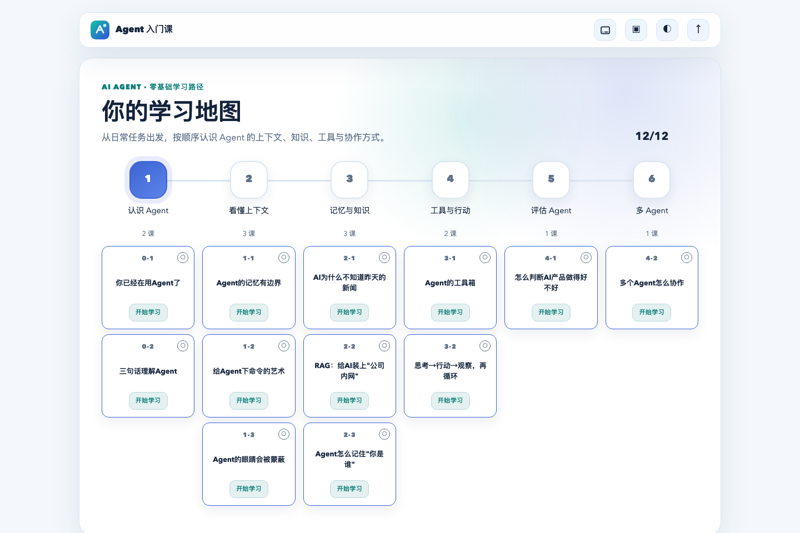
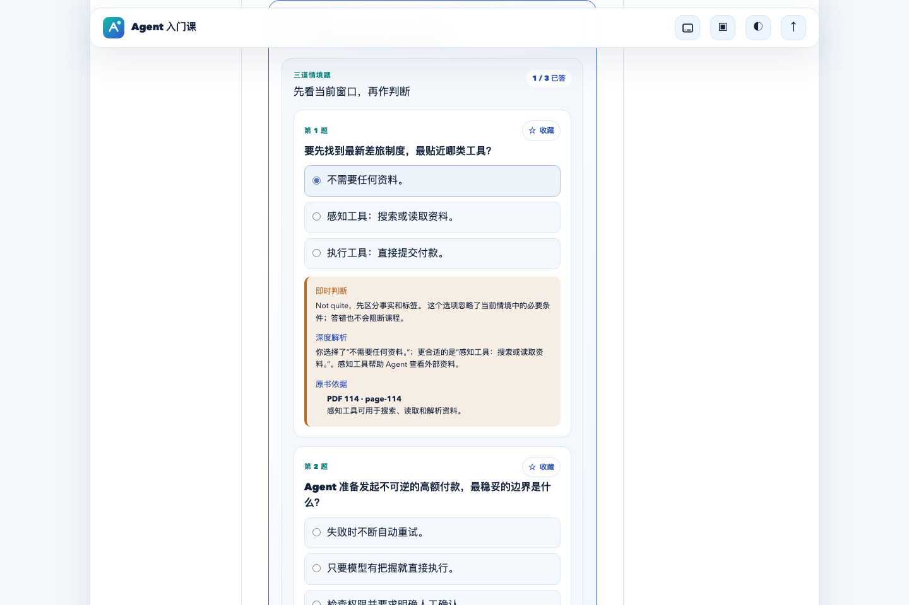
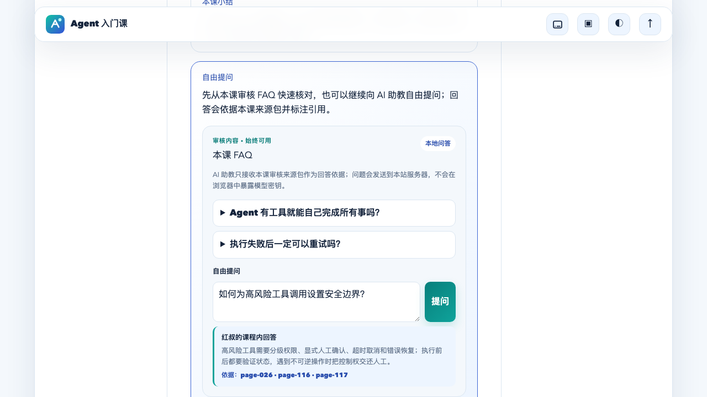
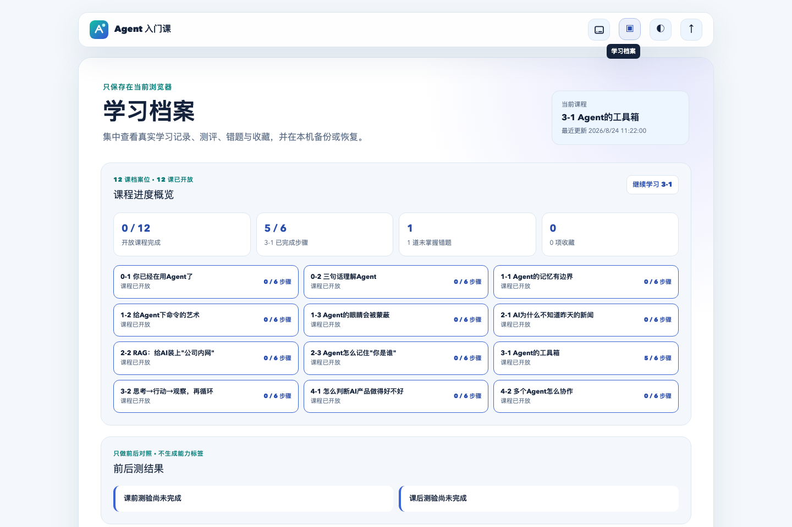

OPEN SOURCE / LEARNING PROTOCOL 01
从任务出发 AGENT 真正学会
不背术语，也不只看概念。从真实任务出发，理解上下文、知识、工具与多 Agent 协作。
12LESSONS
互动课程
互动课程
06MODULES
能力模块
能力模块
02RUNTIMES
部署模式
部署模式
COURSE_MAP.SYS
ONLINE
SYSTEM READY
PROGRESS / LOCAL
AI TUTOR / ONLINE
CORE FORMULALLM + C + T
12/12LESSONS LOADED
◆ VISITOR MODE 即开即学
◆ SOURCE GROUNDED 有据可查
◆ AI TUTOR 自由问答
◆ DUAL RUNTIME 双端部署
SYSTEM ARCHITECTURE / 01
课程不是列表。 而是一条成长路径。
六个能力区，十二个任务节点。从认识 Agent，到工具调用、评估与多 Agent 协作。
COREAGENTLLM + C + T
01认知
02上下文
03知识
04工具
05评估
06协作
先理解
用熟悉的工作场景讲清抽象概念，无需技术背景。
再判断
通过测验、情境与实验，把看懂变成自己的判断。
继续追问
AI 助教依据本课材料回答，并把引用一并交给你。
PRODUCT TELEMETRY / 02
不是概念图。 是学习现场。
四个真实界面，串起看课、练习、追问与沉淀。
MISSION 01学习地图
先看全局，再走下一步。
12 节课沿着 Agent 能力结构展开，让每一步都有方向。
- 6 个能力模块
- 进度自动恢复
- 访客即开即学
LIVE / HOME01
SCREEN ONLINE
LIVE / QUIZ02

SCREEN ONLINEMISSION 02情境练习
不止判对错，更讲清为什么。
即时判断、深度解析、原书页码，让一次选择变成可迁移的理解。
03层反馈100%依据标注
MISSION 03AI 助教
可以自由问，回答要有依据。
AI 只读取当前课程的审核来源；回答附带引用，模型密钥始终留在服务端。
提问 / 如何设置工具安全边界？
权限分级 · 人工确认 · 超时取消 · 错误恢复
LIVE / AI TUTOR03

SCREEN ONLINELIVE / PROFILE04

SCREEN ONLINEMISSION 04学习档案
每次学习，都有迹可循。
进度、测验、错题与收藏自动沉淀；可留在本地，也可同步或导出。
- Local-first
- 云端可选
- 备份可迁移
DUAL RUNTIME / 03
一套课程内核。 两种部署边界。
课程、交互与档案格式保持一致；身份、存储与模型网关各自独立。
RUNTIME / PUBLIC01
Internet
Vercel · 面向所有学习者
- IDENTITY
- 访客 / Supabase OTP
- PROFILE
- localStorage / Supabase
- AI GATEWAY
- Serverless Function
RUNTIME / ENTERPRISE02
Cowork
企业内网 · 自动识别组织身份
- IDENTITY
- Enterprise SSO
- PROFILE
- PostgreSQL
- AI GATEWAY
- Internal Runway
BUILD YOUR OWN
拿来即用，改成你的课。
基于 React 19、TypeScript 与 Vite。课程引擎、双部署契约和测试均以 MIT License 开源。
QUICK_START.SH● ● ●
01$ git clone https://github.com/Songhonglei/ai-agent-learning.git
02$ cd ai-agent-learning
03$ npm install
04$ npm run dev
05✓ SYSTEM READY / localhost:5173READY FOR LAUNCH
打开第一课。开始理解 Agent。
无需注册。访客进度留在本地，也能向 AI 自由提问。